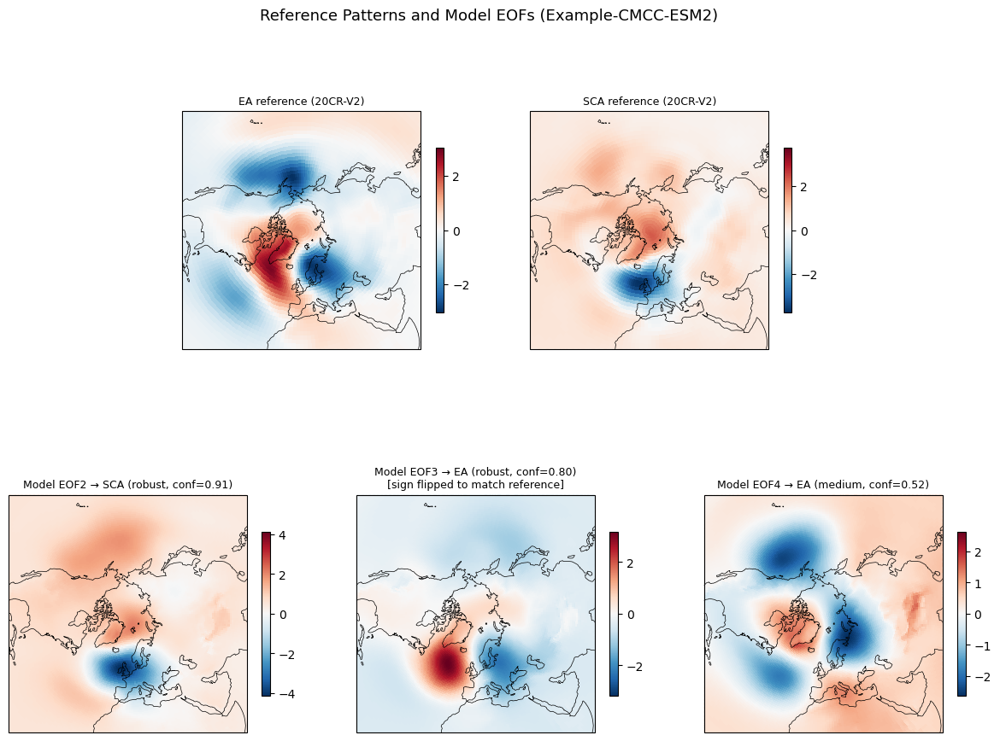

Empirical Orthogonal Functions (EOF) Classification Algorithm for Arctic Atmospheric Variability Modes
Classifies model Empirical Orthogonal Functions (EOFs 2–4 of JFM sea-level pressure) as East Atlantic (EA) or Scandinavian (SCA) patterns using three independent methods and a consensus score.
This capability is available in PMP v4.1 or higher versions.
Contributions
The original code was developed at Los Alamos National Laboratory (LANL) as a contribution to PMP, the PCMDI Metrics Package (Lawrence Livermore National Laboratory; LLNL).
Original developers
Martin Velez Pardo (Los Alamos National Laboratory, EES-14)
Alexandra Jonko (Los Alamos National Laboratory, EES-17)
PMP Implementation
Jiwoo Lee (Lawrence Livermore National Laboratory)
Kristin Chang (Lawrence Livermore National Laboratory)
Overview
The script compares each model’s EOF2, EOF3, and EOF4 against observational ground-truth control patterns (EA and SCA) derived from reanalysis data. Three methods independently classify each EOF, and a consensus layer aggregates their results.
Methods
1. Subspace projection (shift-tolerant)
Projects the EA and SCA control patterns onto the model’s EOF subspace (span{EOF2, EOF3, EOF4}) via weighted least squares, allowing for small phase shifts in latitude and longitude. For each EOF, the relative coefficient dominance across both fits determines whether it more closely represents EA or SCA.
2. Correlation + geographic tests
Scores each EOF on a 100-point scale combining four diagnostics: weighted pattern correlation with each control (0–40 points), correlation with the orthogonalised component unique to each pattern (0–40 points), and two geographic tests based on regional pressure anomalies over Greenland, Ireland, and Scandinavia (0–10 points each).
3. K-means clustering
Clusters all EOFs across models into three groups using area-weighted, sign-oriented, row-normalised features. Clusters are labelled EA, SCA, or OTHER by correlation with the controls. Each EOF receives a soft membership score indicating its affinity to each cluster type. Pre-computed cluster centers are saved to a JSON file so that subsequent runs classify new models without needing the full ensemble.
Consensus
For each EOF, the three methods each produce a label (EA or SCA) and a confidence score in [0, 1]. The consensus layer combines these into a single classification:
Label: simple majority vote (2/3 or 3/3 agree). If no majority exists, the label is UNCLASSIFIED.
Confidence: (fraction of methods agreeing) × (mean confidence of agreeing methods).
Quality: derived from the consensus confidence:
Quality
Confidence range
Warning?
robust
≥ 0.7
no
medium
0.5 – 0.7
no
weak
0.3 – 0.5
WARNING
very weak
< 0.3
WARNING
Because model EOFs may span a subspace that mixes the reference patterns, multiple EOFs can receive the same label when their projections are not cleanly separable.
Inputs
The script requires three types of input files, all in netCDF format:
Model EOF files — one file per EOF mode (2, 3, 4) per model, containing a 2-D (lat × lon) spatial pattern. File paths are discovered via glob patterns set in
EOF_GLOBS.Control patterns — EA and SCA reference patterns from a reanalysis (e.g., 20CR-V2). Paths set in
EA_CTRL_FILEandSCA_CTRL_FILE.K-means centers file (JSON, optional on first run) — pre-computed cluster centers. If the file does not exist on first run, the script trains from the full ensemble and saves the centers for future use. To run this part,
`scikit-learn<https://scikit-learn.org/>`__ is required to be installed in your environment. See here for the installation.
[1]:
# Get the sample input data from https://doi.org/10.5281/zenodo.19666396
# 1. Download the file and save it as data.tar.gz
!curl -L "https://zenodo.org/records/19666396/files/data.tar.gz?download=1" -o data.tar.gz
# 2. Extract the contents
!tar -xvzf data.tar.gz
% Total % Received % Xferd Average Speed Time Time Time Current
Dload Upload Total Spent Left Speed
100 3378k 100 3378k 0 0 1926k 0 0:00:01 0:00:01 --:--:-- 1926k
data/
data/example_eofs/
data/kmeans_centers_20CR-V2_CMIP6.json
data/SCA_psl_EOF3_JFM_obs_1969-2012.nc
data/EA_psl_EOF2_JFM_obs_1969-2012.nc
data/example_eofs/EOF4_psl_JFM_cmip6_Example-CMCC-ESM2_piControl_r1i1p1f1_mo_atm_1850-2349.nc
data/example_eofs/EOF2_psl_JFM_cmip6_Example-CMCC-ESM2_piControl_r1i1p1f1_mo_atm_1850-2349.nc
data/example_eofs/EOF3_psl_JFM_cmip6_Example-CMCC-ESM2_piControl_r1i1p1f1_mo_atm_1850-2349.nc
Example Usage
[2]:
from pcmdi_metrics.variability_mode import eof_classification
[3]:
results = eof_classification(
ea_ctrl_file="data/EA_psl_EOF2_JFM_obs_1969-2012.nc",
sca_ctrl_file="data/SCA_psl_EOF3_JFM_obs_1969-2012.nc",
kmeans_centers_file="data/kmeans_centers_20CR-V2_CMIP6.json",
output_root="eof_classification"
)
============================================================
Controls : 20CR-V2
EA : data/EA_psl_EOF2_JFM_obs_1969-2012.nc (×+1)
SCA : data/SCA_psl_EOF3_JFM_obs_1969-2012.nc (×-1)
Domain: lat=(20.0, 90.0), lon=ALL
K-means: data/kmeans_centers_20CR-V2_CMIP6.json (apply saved)
============================================================
!!!!!!!!!!!!!!!!!!!!!!!!!!!!!!!!!!!!!!!!!!!!!!!!!!!!!!!!!!!!
WARNING: Running with EXAMPLE data (single CMIP6 model).
Results are for demonstration only, not your own models.
To use your own data, set MODEL_EOF_DIR or pass eof_globs=...
!!!!!!!!!!!!!!!!!!!!!!!!!!!!!!!!!!!!!!!!!!!!!!!!!!!!!!!!!!!!
[kmeans] loaded centers from data/kmeans_centers_20CR-V2_CMIP6.json (reanalysis=20CR-V2, cmip=CMIP6)
[output] wrote: eof_classification_consensus.tsv
[output] wrote: eof_classification_consensus.txt
[4]:
results
[4]:
{'Example-CMCC-ESM2': {2: {'label': 'SCA',
'confidence': np.float64(0.905),
'quality': 'robust',
'inverted': False,
'methods': {'subspace': {'label': 'SCA', 'confidence': np.float64(0.992)},
'correlation': {'label': 'SCA', 'confidence': 0.725},
'kmeans': {'label': 'SCA', 'confidence': 0.999}}},
3: {'label': 'EA',
'confidence': np.float64(0.8),
'quality': 'robust',
'inverted': True,
'methods': {'subspace': {'label': 'EA', 'confidence': np.float64(0.763)},
'correlation': {'label': 'EA', 'confidence': 0.651},
'kmeans': {'label': 'EA', 'confidence': 0.987}}},
4: {'label': 'EA',
'confidence': np.float64(0.516),
'quality': 'medium',
'inverted': False,
'methods': {'subspace': {'label': 'EA', 'confidence': np.float64(0.797)},
'correlation': {'label': 'EA', 'confidence': 0.588},
'kmeans': {'label': 'EA', 'confidence': 0.162}}}}}
Output
Two files are produced in the current directory:
eof_classification_consensus.tsv— tab-separated, machine-readable.eof_classification_consensus.txt— fixed-width, human-readable.
Each row represents one EOF of one model and contains:
Column |
Description |
|---|---|
Model |
Model name |
EOF |
EOF mode (EOF2, EOF3, or EOF4) |
Subspace_label |
Subspace method classification (EA / SCA / NA) |
Subspace_conf |
Subspace confidence [0, 1] |
Correlation_label |
Correlation method classification |
Correlation_conf |
Correlation confidence [0, 1] |
Kmeans_label |
K-means classification |
Kmeans_conf |
K-means confidence [0, 1] |
Consensus_label |
Majority-vote label (EA / SCA / UNCLASSIFIED) |
Consensus_conf |
Consensus confidence [0, 1] |
Quality |
robust / medium / weak / very weak |
Warning |
WARNING flag if quality is weak or very weak |
Notes |
“sign-inverted” if EOF has opposite sign to the reference pattern; “check sign” if consensus confidence is below 0.5 |
[5]:
import pandas as pd
from IPython.display import display, Markdown
# Display note
with open('eof_classification_consensus.tsv') as f:
for line in f:
if line.startswith('#'):
display(Markdown(line.strip('# \n')))
else:
break
# Display the table
df = pd.read_csv('eof_classification_consensus.tsv', sep='\t', comment='#')
df = df.fillna('')
display(df)
NOTE: Confidence scores range from 0 to 1; values closer to 1 indicate stronger resemblance to the assigned pattern. The consensus label is by simple majority vote. The consensus confidence = (fraction of methods agreeing) x (mean confidence of agreeing methods). Quality levels: robust >= 0.7, medium >= 0.5, weak >= 0.3, very weak < 0.3. Because model EOFs may span a subspace that mixes the reference patterns, multiple EOFs can receive the same label when their projections are not cleanly separable. Notes: ‘sign-inverted’ means the EOF has opposite sign convention to the reference pattern. ‘check sign’ means the classification confidence is below 0.5 and the sign should be verified manually.
| Model | EOF | Subspace_label | Subspace_conf | Correlation_label | Correlation_conf | Kmeans_label | Kmeans_conf | Consensus_label | Consensus_conf | Quality | Warning | Notes | |
|---|---|---|---|---|---|---|---|---|---|---|---|---|---|
| 0 | Example-CMCC-ESM2 | EOF2 | SCA | 0.99 | SCA | 0.72 | SCA | 1.00 | SCA | 0.91 | robust | ||
| 1 | Example-CMCC-ESM2 | EOF3 | EA | 0.76 | EA | 0.65 | EA | 0.99 | EA | 0.80 | robust | sign-inverted | |
| 2 | Example-CMCC-ESM2 | EOF4 | EA | 0.80 | EA | 0.59 | EA | 0.16 | EA | 0.52 | medium |
Visualize example data
[6]:
import matplotlib.pyplot as plt
import matplotlib.gridspec as gridspec
import cartopy.crs as ccrs
import numpy as np
from glob import glob
from eof_classification import _read_da, _subset, _coslat_w2d, _wcor, EA_SIGN, SCA_SIGN
# Get the model name from the results
model = list(results.keys())[0]
# Load controls (already sign-corrected)
ea_ctrl = EA_SIGN * _read_da("data/EA_psl_EOF2_JFM_obs_1969-2012.nc")
sca_ctrl = SCA_SIGN * _read_da("data/SCA_psl_EOF3_JFM_obs_1969-2012.nc")
# Load model EOFs
eof2 = _read_da(glob("data/example_eofs/EOF2_*.nc")[0])
eof3 = _read_da(glob("data/example_eofs/EOF3_*.nc")[0])
eof4 = _read_da(glob("data/example_eofs/EOF4_*.nc")[0])
# Orient EOFs and build subtitles from classification results
def orient_and_label(eof_da, eof_num):
r = results[model][eof_num]
label = r["label"]
conf = r["confidence"]
quality = r["quality"]
inverted = r["inverted"]
if inverted:
eof_da = eof_da * -1
title = f"Model EOF{eof_num} → {label} ({quality}, conf={conf:.2f})\n[sign flipped to match reference]"
else:
title = f"Model EOF{eof_num} → {label} ({quality}, conf={conf:.2f})"
return eof_da, title
eof2_plot, title2 = orient_and_label(eof2, 2)
eof3_plot, title3 = orient_and_label(eof3, 3)
eof4_plot, title4 = orient_and_label(eof4, 4)
# Plot
proj = ccrs.NorthPolarStereo()
fig = plt.figure(figsize=(15, 10))
gs = gridspec.GridSpec(2, 6, hspace=0.4, wspace=0.4)
ax_ea = fig.add_subplot(gs[0, 1:3], projection=proj)
ax_sca = fig.add_subplot(gs[0, 3:5], projection=proj)
ax_eof2 = fig.add_subplot(gs[1, 0:2], projection=proj)
ax_eof3 = fig.add_subplot(gs[1, 2:4], projection=proj)
ax_eof4 = fig.add_subplot(gs[1, 4:6], projection=proj)
panels = [
(ax_ea, "EA reference (20CR-V2)", ea_ctrl),
(ax_sca, "SCA reference (20CR-V2)", sca_ctrl),
(ax_eof2, title2, eof2_plot),
(ax_eof3, title3, eof3_plot),
(ax_eof4, title4, eof4_plot),
]
for ax, title, da in panels:
lat = da["lat"].values
lon = da["lon"].values
vals = da.values
vmax = np.nanmax(np.abs(vals))
ax.set_extent([-180, 180, 20, 90], crs=ccrs.PlateCarree())
im = ax.pcolormesh(
lon, lat, vals,
transform=ccrs.PlateCarree(),
cmap="RdBu_r", vmin=-vmax, vmax=vmax,
)
ax.coastlines(linewidth=0.5)
ax.set_title(title, fontsize=9)
fig.colorbar(im, ax=ax, shrink=0.6, pad=0.05)
plt.suptitle(f"Reference Patterns and Model EOFs ({model})", fontsize=13, y=0.98)
plt.show()
